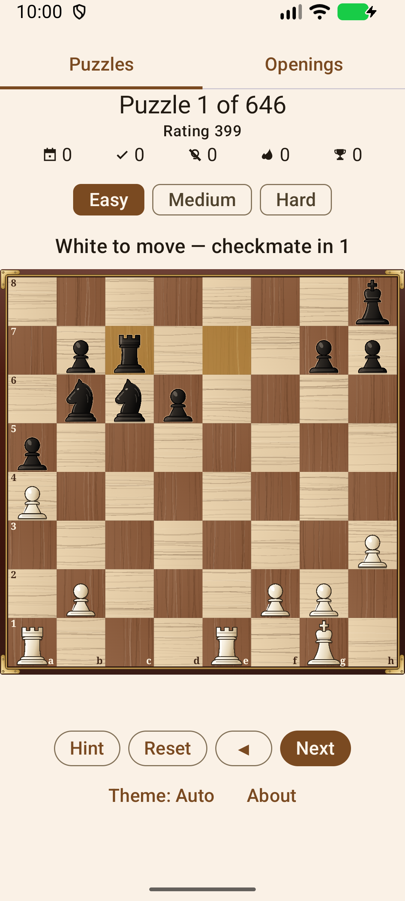
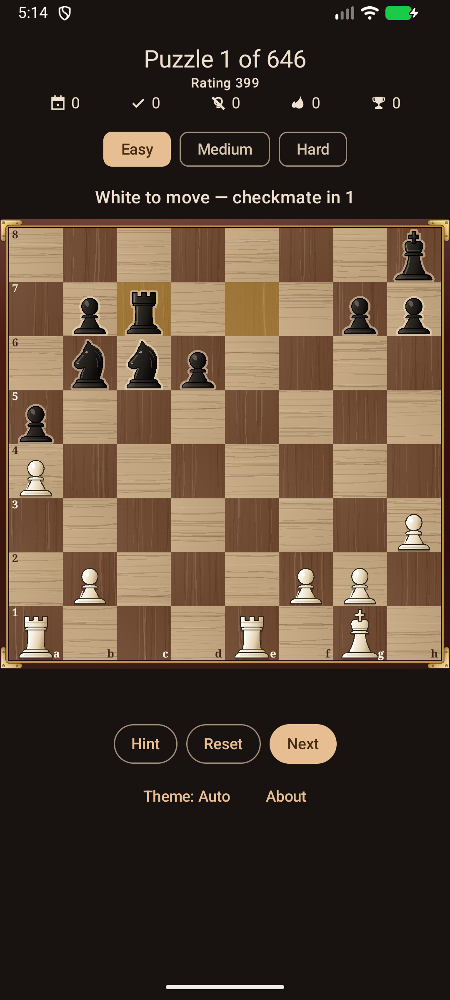
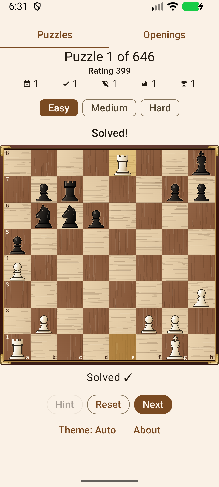
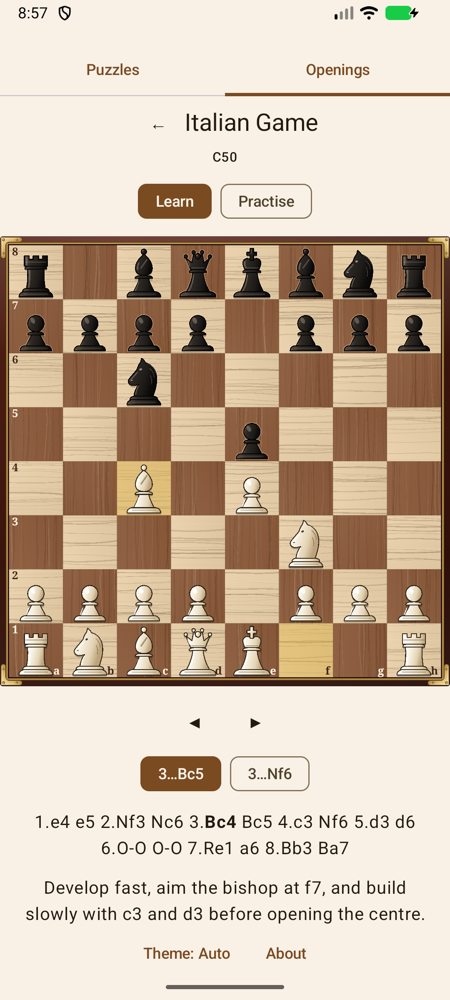

🧩
Rigtige Lichess-opgaver
Tusindvis af taktikopgaver udvalgt fra Lichess Open Database (CC0).
Løs tusindvis af rigtige opgaver fra Lichess-databasen på din Android-telefon. Find det bedste træk. Resten spiller sig selv.
Gratis og open source · Android 7.0+ · ingen konto, helt uden internet
Ingen menuer at kæmpe sig igennem og ingen tilmelding. Åbn appen, og du er allerede i gang med at løse opgaver.
Tusindvis af taktikopgaver udvalgt fra Lichess Open Database (CC0).
Hver opgave oplyser sit mål, for eksempel "mat i 2 træk" eller "vind materiale". Find det bedste træk, og se derefter modstanderen svare.
Let, Mellem eller Svær. Skift mellem ratingintervaller med ét tryk.
Lær tyve almindelige åbninger træk for træk, og spil dem derefter fra hukommelsen mod de mest almindelige svar.
Dit antal løste opgaver og din serie gemmes på enheden, så du kan fortsætte, hvor du slap.
Ingen konto og intet netværk. Alle opgaver følger med i appen.
Følger telefonens mørke tilstand, eller vælg Auto, Lys eller Mørk i appen. Nattilstand dæmper brættet, så det er behageligt at spille.
Flyt brikker ved at trykke på felter eller trække dem. Et smidigt, specialbygget bræt lavet med Compose.
Under Apache-2.0-licens. Ingen reklamer og ingen sporing, aldrig.
En stilling fra et rigtigt parti dukker op sammen med sit mål: mat i 2 træk, vind materiale eller red partiet. Den ene side er i trækket.
Tryk på brikken, eller træk den. Et forkert træk betyder bare, at du kan prøve igen.
Modstanderen svarer automatisk, indtil opgaven er løst.
Løs den næste. Din fremgang gemmes på enheden.
Gratis og open source, til Android 7.0 og nyere. Installér den fra F-Droid, eller hent APK-filen fra GitHub.




Et Kotlin-projekt i flere moduler, med en skakmotor i ren JVM og en brugerflade i Jetpack Compose. Logikken har 100 % linjedækning (målt med Kover, hvor de funktioner, der tegner skærmen, er undtaget og dækkes af Compose-rendertests). Læs kildekoden, og byg den selv.
Opgaver fra Lichess Open Database (CC0 1.0).